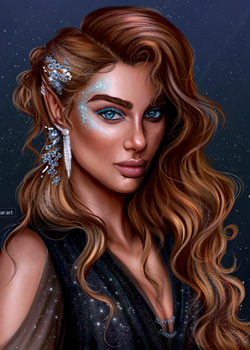
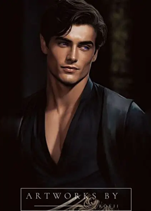
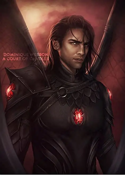
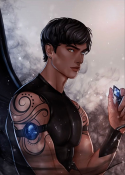
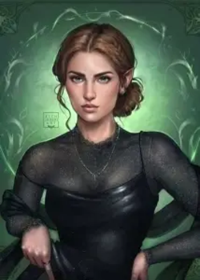
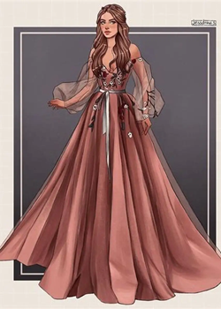

A Court of Thorns and Roses follows Feyre Archeron’s journey from a mortal girl struggling to survive into a powerful figure within the Fae world. What begins as a story of captivity and survival grows into a deeply emotional exploration of love, trauma, healing, and choice. As alliances shift and hidden truths come to light, the series expands into a larger conflict that reshapes both the human and Fae realms.
Feyre’s journey is one of transformation born from survival, love, and unbearable loss. What begins as a fight to keep her family alive becomes something far greater as she is drawn into the Fae world and forced to confront both external cruelty and her own inner darkness. Her strength lies not just in power, but in her ability to rebuild herself again and again, choosing healing even when it would be easier to break.

Rhys is a character shaped by sacrifice, secrets, and the weight of protecting others at any cost. Beneath his calculated exterior lies someone who has endured centuries of pain and compromise, yet still believes in freedom, choice, and love without control. His devotion is quiet but absolute, built on trust and the belief that power should never take away another person’s agency.

A warrior through and through, Cassian carries both strength and heart in equal measure. He is fiercely loyal, often using humor to mask his own wounds, and stands as a constant source of support for those he considers family. His battles are not just fought on the field, but within himself, as he struggles with worth and belonging.

Silent, observant, and deeply scarred, Azriel lives in the spaces others overlook. His past has shaped him into someone who watches more than he speaks, carrying loneliness and longing beneath his calm exterior. Yet his loyalty runs deep, and his actions often speak louder than words ever could.

Nesta’s story is one of anger, grief, and slow, painful healing. She lashes out because she feels too deeply, carrying guilt and self-loathing that isolate her from those who want to help. Her journey is not easy or gentle—it is about learning to face herself, to accept love, and to believe she is worthy of it.

Often underestimated, Elain moves quietly through the world, but her gentleness hides a different kind of strength. She represents hope, softness, and the ability to endure without hardening completely. Her growth is subtle, rooted in finding her voice and place in a world that changed without her consent.
